Additional Information
This page gives you additional information on certain aspects of mod_qos to get a better understanding about how to use the module.
- Directives
- Rules
- Environment Variables
- Concurrency Counter
- Repeat Counter
- Throughput Control
- Serialization
- Error Pages and Server Side Includes (SSI)
- User Tracking
- Request Statistics Using qslog
Directives
The module is configured by directives. All directives process the connection, HTTP request, and response data in a pre-defined sequence. The following graph shows the order in which the directives work.
{kind=link}
Rules
mod_qos allows you to configure different kind of rules. The main component of a rule is its counter. A rule measures either the concurrency (how many times something happens at the same time), the occurrence (how often does something happen in a certain amount of time), or the throughput (sent amount of data or number of request) and stores this information within that counter.
Every rule has it's own threshold and maintains its own counter. A rule is identified by either an URL pattern/matching string or by an environment variable name. You can configure as many rules as you want.
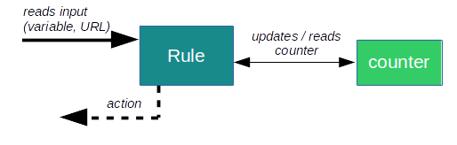
Note: Some counters are only available once. This applies to the counters of
the rules using the
QS_Block,
QS_SrvSerialize, and
QS_Serialize
environment variables.
Environment Variables
The Apache web server provides a mechanism for storing information
in so called environment variables. mod_qos uses these
variables to exchange data respectively signalize events between
different rules defined by the
corresponding directive. These
variables can also be written or read by other Apache modules, such as
mod_setenvifplus  or mod_setenvif .
or mod_setenvif .
Example:
The SetEnvIf directive
is used to set the LimitLogin variable if the request line matches
the ^/wp-login.php pattern while the
QS_ClientEventLimitCount
directives increments the repeat counter having the same name
if the variable is present.
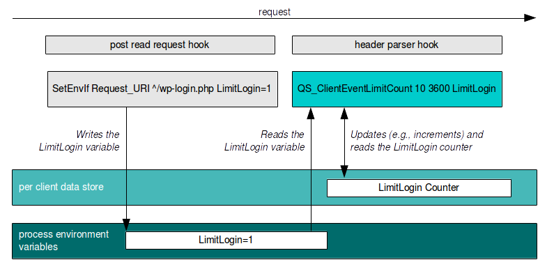
It is also possible to write the values of these variables to your log
file using the format string %{VARNAME}e within the
TransferLog/CustomLog
directives. Or you can use them within error pages using
server-side includes (SSI).
Note: Whenever you use a directive (such as
SetEnvIfPlus ) which can either process request attributes (such
as HTTP headers) or environment variables, you must make sure that
a client can not bypass your rules by sending a request header
with the same name as the environment variable used in your configuration.
Use either the request header filter
or the QS_UnsetReqHeader
directive to prevent anyone from sending a request header with the same name as
the variable you have defined.
Concurrency Counter
A "concurrency counter" is used to determine how many times something happens at the same time, e.g. HTTP requests accessing the same resource/URL at the same time. The rules using this counter type are either defined by an environment variable name or an URL pattern (regular expression or a string matching the request's URL). Such a rule automatically increments the counter when the Apache web server starts to process a matching request and decrements the counter when the request processing is completed.
You have to configure a threshold and the rule's variable name resp. URL pattern. Requests (or new connections) are denied as soon as the configured threshold is reached.
Directives using this counter type are:
QS_LocRequestLimitMatch QS_LocRequestLimit QS_CondLocRequestLimitMatch QS_EventRequestLimit QS_ClientEventRequestLimit
QS_SrvMaxConn,
QS_SrvMaxConnClose, and
QS_SrvMaxConnPerIP
directives use this counter type, although with fewer parameter options.
Sample Use Case
Now let us look at an example to show where these rules can be used. Let's assume that you have two applications. We call them "A" and "B". Application "A" has been deployed on path/app/a and "B"
on /app/b.
|
As long as the server has enough resources, users can access both
applications the same time without influencing each other. All requests are processed quickly and the workers become free again to serve new requests. |
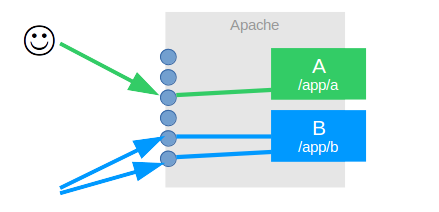 | |
|
But if the application "B" becomes slow,
the duration of request processing increases and all workers become busy.
There are no free workers left and application
"A" becomes unavailable because of that.
|
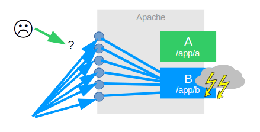 | |
A QS_LocRequestLimit or
QS_LocRequestLimitMatch
rule can help in such a situation. mod_qos limits the
number of requests to application "B"
so that application "A" remains
available even application "B"
has problems.
|
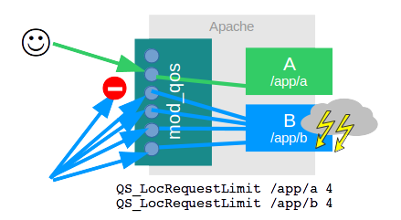 |
Such a scenario can occur due to various infrastructure problems, e.g., by slow database queries.
A similar situation can also arise through an external influence: if someone penetrates application "B" with a HTTP GET / POST flood DoS attack, then application "A" could also become unreachable. A
QS_LocRequestLimit
rule can prevent this.
Repeat Counter
"Repeat counters" limit the number how often (Cr) something is allowed to happen in a certain amount of time (Td). These rules trigger a timer whenever the defined event occurs the first time and start to count every subsequent event until the timer expires. If the event counter reaches the defined limitation, requests are blocked until the time is up.

All repeat counters allow you to define an event which shall increment the counter if they occur. You also have to configure a duration Td and the threshold Cr, defining how many events are allowed within the time Td.
Directive parameter example:
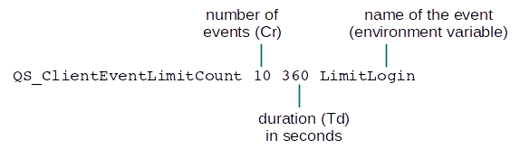
While the counter is automatically cleared (set to 0) when the time Td is up, you might also configure additional events to decrement or clear the counter earlier.
The directives using this counter type are:
QS_EventLimitCount QS_CondEventLimitCount QS_ClientEventLimitCount QS_CondClientEventLimitCount QS_ClientEventBlockCount
Throughput Control
Throughput control is implemented by measuring the current usage and calculating a necessary delay which needs to be applied to the data processing in order to achieve the desired limitation (closed loop control system).
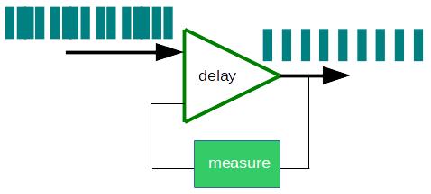
mod_qos can limit the bandwidth when downloading data from your web server to the client. This throughput control can be configured by the following directives:
Requests per Second
It is also possible to limit the number or requests per second to a
resource. This control function is less accurate than the bandwidth
limitation, since the measurement of the request rate takes longer
(several seconds) and the request delay is more coarse-grained.
The following directive can be used to limit the number of requests
per second:
Serialization
mod_qos offers you the option to serialize requests. Serialization means, that requests are processed one after the other. Incomming requests are queued if another request is in process and have to wait until the previous request is finished.
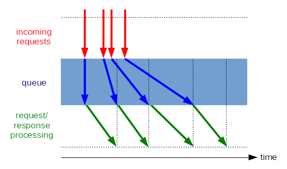
Requests, which shall be serialized, are tagged by one of the following environment variables:
Serialization might be applied on a per server level (serializing all HTTP requests) or on a per client level (serializing multiple requests comming from the same client/IP address).
Error Pages and Server Side Includes (SSI)
Custom error documents to be used by mod_qos
are either configured using the
QS_ErrorPage directive
or the QS_ErrorPage
variable.
You may also use Apache's server-side includes (SSI) to generate the content
of the error document dynamically. The error codes and
other variables set by
mod_qos can be used.
Sample configuration:AddType text/html .shtml AddOutputFilter INCLUDES .shtml QS_ErrorPage /errorpages/qs_error.shtml |
Sample page:
<!DOCTYPE HTML PUBLIC "-//W3C//DTD HTML 4.01 Transitional//EN">
<html>
<head>
<!--
-- mod_qos sample SSI error page (Apache 2.4)
-->
<meta http-equiv="Cache-Control" content="no-cache, no-store"/>
<meta http-equiv="expires" content="0" />
<title>ERROR - <!--#echo var="REDIRECT_ERROR_NOTES" --></title>
</head>
<body>
<p>
<b><i>sorry - the server was unable to complete your request</i></b>
</p>
<p>
code: mod_qos(<!--#echo var="QS_ErrorNotes" -->)<br>
<!--#if expr="v('REDIRECT_ERROR_NOTES') =~ /00[0-9]/" -->
reason: initialisation failure
<!--#elif expr="v('REDIRECT_ERROR_NOTES') =~ /0[18][0-9]/" -->
reason: request rule
<!--#elif expr="v('REDIRECT_ERROR_NOTES') =~ /03[0-9]/" -->
reason: connection rule
<!--#elif expr="v('REDIRECT_ERROR_NOTES') =~ /[01]4[0-9]/" -->
reason: request filter
<!--#elif expr="v('REDIRECT_ERROR_NOTES') =~ /05[0-9]/" -->
reason: bandwidth limitation
<!--#elif expr="v('REDIRECT_ERROR_NOTES') =~ /[01]6[0-9]/" -->
reason: client limitation <br>
remaining time: <span id="remaining"><!--#echo var="QS_Limit_Remaining" --></span> seconds
<script type="text/javascript">
<!--
setInterval(function () {
var msg = document.getElementById('remaining');
if(msg) {
var value = msg.innerHTML;
var remainTime = value - 1;
if(remainTime < 0) {
window.location = window.location.pathname;
} else {
msg.innerHTML = remainTime;
}
}
}, 1000);
//-->
</script>
<!--#elif expr="v('REDIRECT_ERROR_NOTES') =~ /10[0-9]/" -->
reason: GEO location limitation
<!--#else -->
reason: generic failure
<!--#endif -->
</p>
</body>
</html>
|
User Tracking
It might be necessary to identify individual users to define appropriate QoS
rules. For this reason, mod_qos can set a cookie
containing a unique identifier. This identifier is then written to the
mod_qos_user_id
environment variable and you can add it to your log files by the
format string %{mod_qos_user_id}e. This allows you to identify
all requests issued by a user.
This feature is enabled by the following directive:
QS_UserTrackingCookieName <name> [<path>] [<domain>] ['session']
The parameter "name" defines the cookie's name and "domain" (optional) the domain attribute for the Set-Cookie header. The string "session" can be defined if the cookie should not be stored by the session (but can be deleted when the user closes this browser).
QS_UserTrackingCookieName directive.
This parameter defines an error document and mod_qos
answers the request with a redirect (302) to this document when setting
the cookie initially. The browser will follow the redirect and mod_qos
redirects the browser back to the initially requested page if the request
to this error document contains the tracking cookie. If the browser did not
send the cookie, the error document is shown.
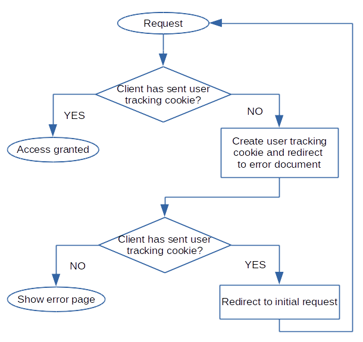
Note: You can exclude certain clients from this enforcement by
setting the DISABLE_UTC_ENFORCEMENT
environment variable
at server level (outside Location), e.g., to allow crawlers not
supporting cookies to access your site.
Sample configuration:QS_UserTrackingCookieName qstrack /errorpages/cookiecheck.html session QS_SessionKey sB.F4_0%D700ahXT2 |
Request Statistics Using qslog
qslog is a command line tool to
generate usage statistics data from log files. It can generate the data in
real time if defined within your Apache's server configuration.
Sample configuration:CustomLog "|/usr/bin/qslog -o logs/qslog.csv -x -f ISBDk" "%h %>s %b %D %k" |
Or you can use it to process any existing log file using the post processing
optin -p. This does not only work for
Apache log files but for any other log file as well. You just have to know what's in the log
and configure the format string argument -f of the
qslog command accordingly.
Example:
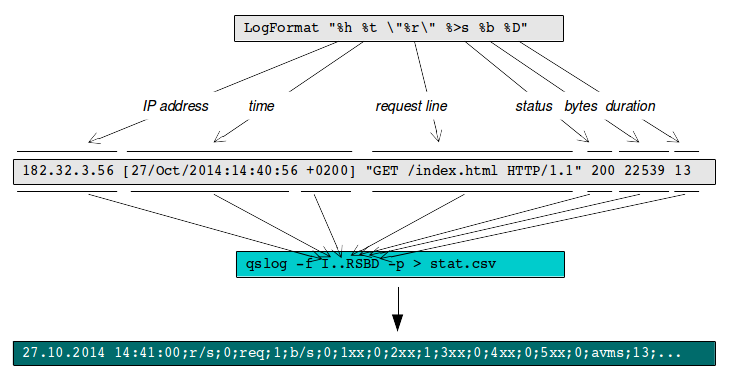
The ouput shows the data as a function of time: a summary of what happened every minute. Each line includes all measured values as semicolon spearated name/value pairs (CSV).
You can use the spreadsheet program of your choice to process the output:
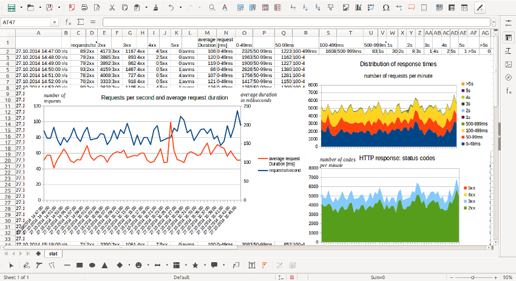